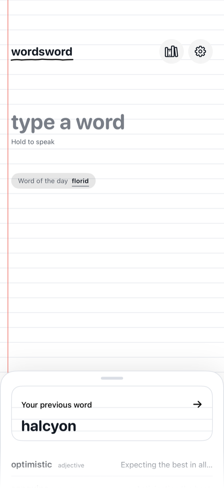
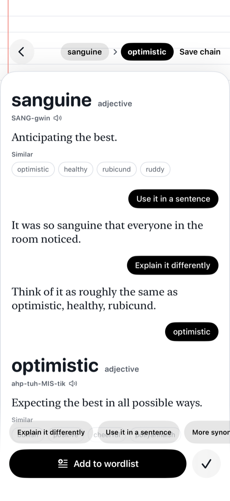
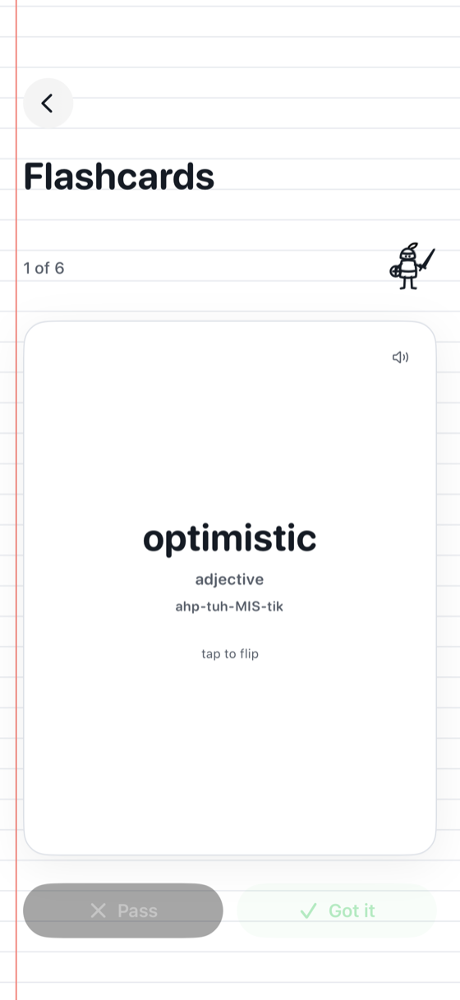
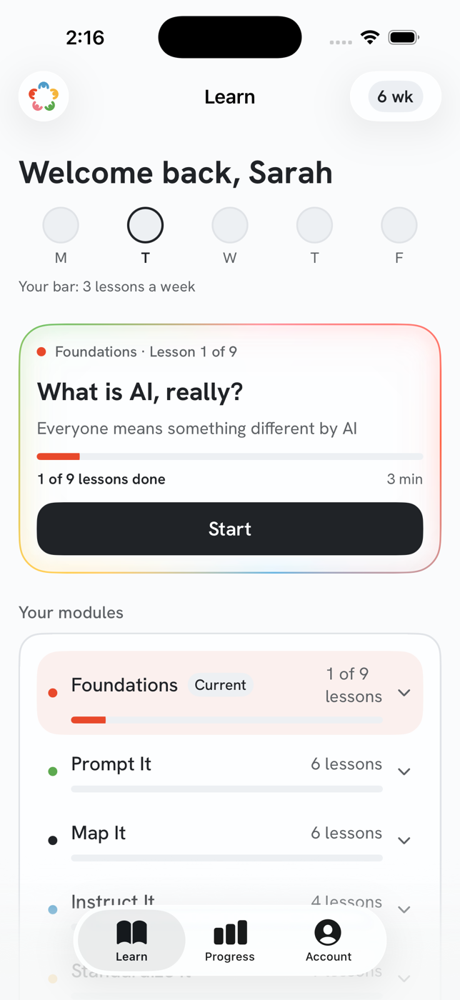
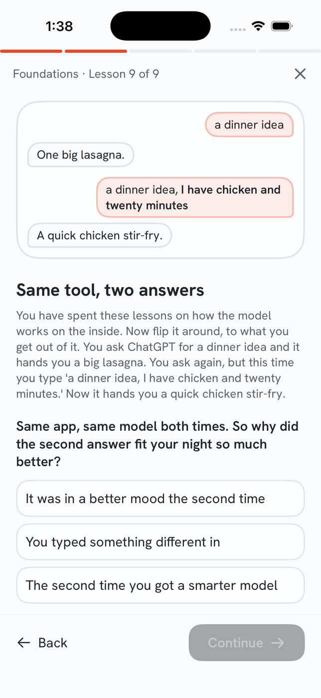
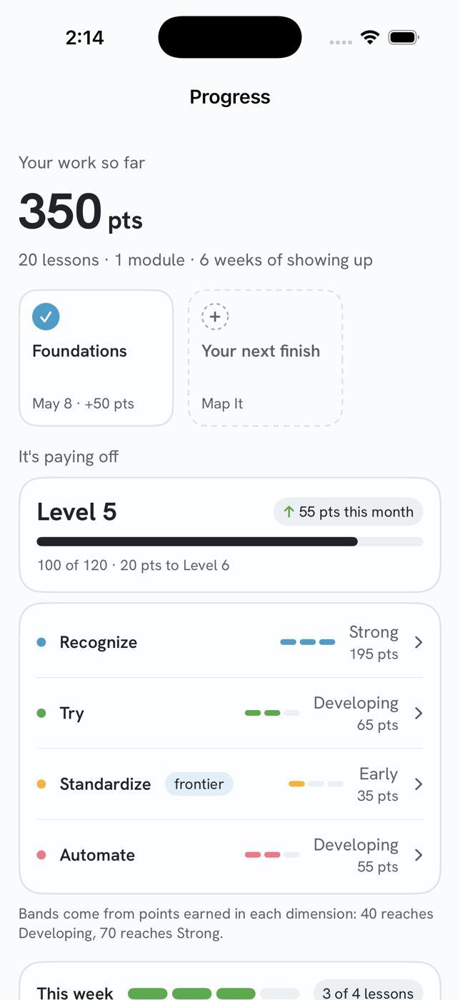
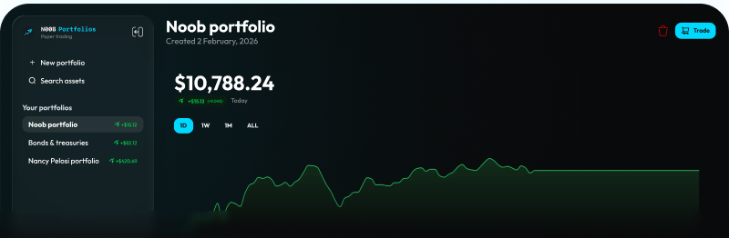
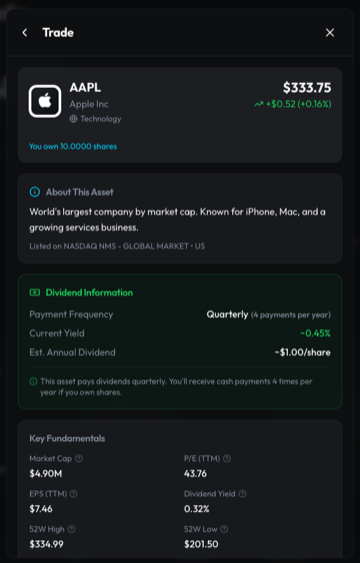

Color
Semantic roles
bg.default#F7F7F8
bg.subtle#ECEDEF
bg.muted#D8DADE
bg.inverse#2F3237
bg.accent.default#B82D28
bg.accent.hover#942724
bg.accent.pressed#71211E
bg.accent.subtle#FAF5F5
bg.accent.muted#F5E6E6
bg.success.strong#5B6A86
bg.success.pressed#4B576D
bg.success.subtle#F7F7F8
bg.success.muted#EBEDEF
bg.warning.strong#5B6A86
bg.warning.pressed#4B576D
bg.warning.subtle#F7F7F8
bg.warning.muted#EBEDEF
bg.danger.strong#B82D28
bg.danger.pressed#942724
bg.danger.subtle#FAF5F5
bg.danger.muted#F5E6E6
bg.info.strong#5B6A86
bg.info.pressed#4B576D
bg.info.subtle#F7F7F8
bg.info.muted#EBEDEF
surface.default#FFFFFF
surface.raised#FFFFFF
surface.overlay#FFFFFF
surface.sunken#ECEDEF
text.default#2F3237 12.02:1 on bg.default
text.muted#676D79 4.85:1 on bg.default
text.subtle#7B818E 3.65:1 on bg.default
text.inverse#F7F7F8 1.0:1 on bg.default
text.disabled#9CA1AB 2.42:1 on bg.default
text.accent#B82D28 5.7:1 on bg.default
text.onAccent#FFFFFF 1.07:1 on bg.default
text.success#3B4454 9.16:1 on bg.default
text.onSuccess#FFFFFF 1.07:1 on bg.default
text.warning#3B4454 9.16:1 on bg.default
text.onWarning#FFFFFF 1.07:1 on bg.default
text.danger#71211E 10.12:1 on bg.default
text.onDanger#FFFFFF 1.07:1 on bg.default
text.info#3B4454 9.16:1 on bg.default
text.onInfo#FFFFFF 1.07:1 on bg.default
border.default#BDC0C7 1.7:1 on bg.default
border.subtle#D8DADE 1.31:1 on bg.default
border.strong#7B818E 3.65:1 on bg.default
border.focus#D33B36 4.41:1 on bg.default
border.inverse#545963 6.57:1 on bg.default
border.success#6D7E9C 3.83:1 on bg.default
border.warning#6D7E9C 3.83:1 on bg.default
border.danger#D33B36 4.41:1 on bg.default
border.info#6D7E9C 3.83:1 on bg.default
icon.default#545963 6.57:1 on bg.default
icon.muted#7B818E 3.65:1 on bg.default
icon.accent#B82D28 5.7:1 on bg.default
icon.onAccent#FFFFFF 1.07:1 on bg.default
icon.success#5B6A86 5.09:1 on bg.default
icon.warning#5B6A86 5.09:1 on bg.default
icon.danger#B82D28 5.7:1 on bg.default
icon.info#5B6A86 5.09:1 on bg.default
Typography
Space
Radius & border
Elevation
Motion
Components
Button
actionscoreFull matrix
CopyLine
actionscoreFull matrix
npx skills add Schubaru/skills --skill norm-dognpx skills add Schubaru/skillsStamp
statuscoreFull matrix
Panel
contentcoreFull matrix
Wordsword
A dictionary that keeps your words.
iOS · v1What it is
The head, one beat and the built-with line, with the shots left out so the frame itself is visible.
Beat
contentcoreFull matrix
What it is
A tiny browser puzzle. Match three dinos to rescue them; let the board fill and it is an EXTINCTION EVENT.
Why it works this way
A five-second game has no business asking for an install, an account, or a tutorial.
My role
Three files. Zero dependencies. No build step. Every dino is hand-inlined SVG.
TapedShot
contentcoreFull matrix
phone-shot · a dealt deck



stack-shot · centre forward



wide-shot · taped close-ups


DemoReel
contentcoreFull matrix
Shown at its poster frame, which is exactly what a reduced-motion visitor gets.
Doodle
contentcoreFull matrix
Annotation
contentcoreFull matrix
going deeper…
rotated, the way it sits in the margin
SkipLink
navigationcoreFull matrix
Chat
contentcoreFull matrix
Speak.
What do you do all day?
I wait for a webhook.